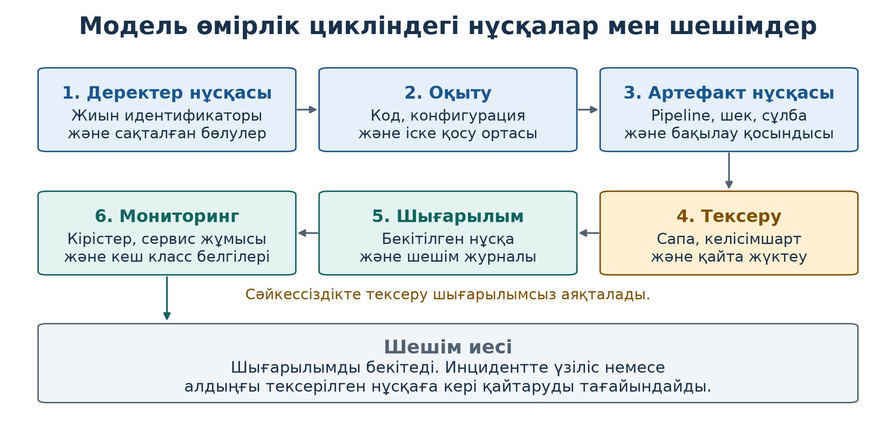
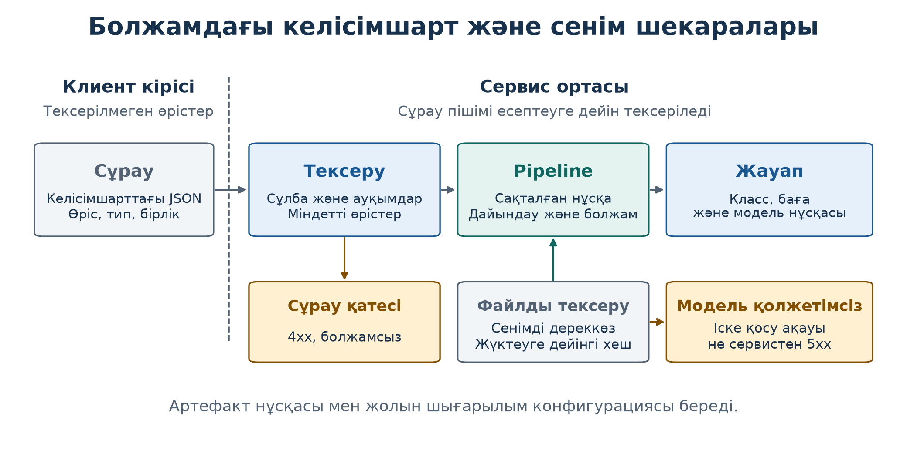
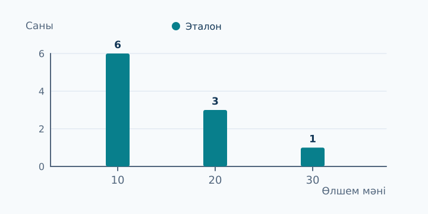
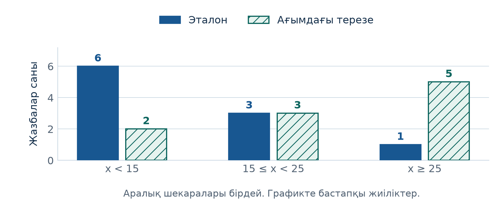
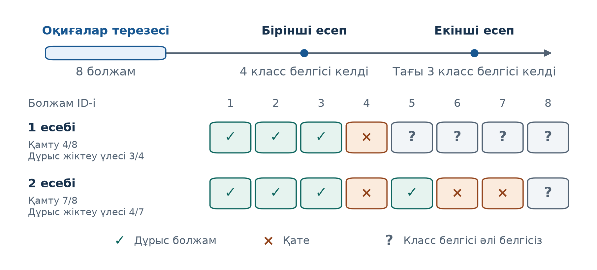
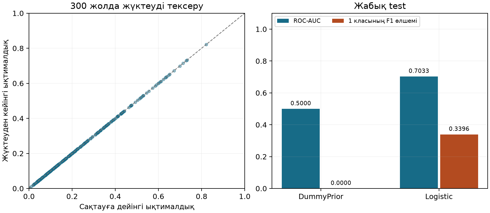
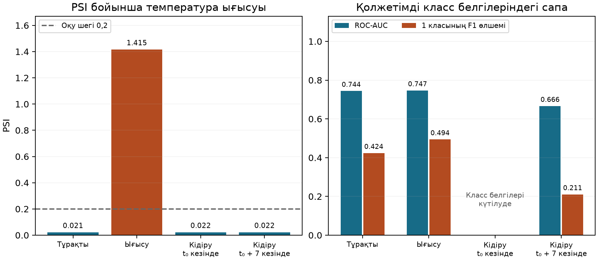

14-тарау. Модельдің өмірлік циклі: ML-модельдерді сақтау, қолданысқа енгізу және мониторинг
14.1 Тақырып бағдарлағышы
Техникалық қызмет көрсету моделін телеметрия бойынша сорғының күйін тануға үйретті. Зертханада кіріс қысым килопаскальмен өлшенген, ал жаңартудан кейін контроллер сол өріске мегапаскаль жібере бастады. Сервис бұрынғыдай сан қабылдап, болжам қайтара берді. Қате деректер көзі мен модель арасындағы шекарада пайда болды. Келісімшарт (contract) өлшем бірлігін айқын белгілесе, сервис кірісті тексерсе, ал журнал болжамды модель нұсқасымен және оқиға уақытымен байланыстырса, оны анықтауға болады.
Тараудан кейін іске қосу журналы бойынша экспериментті қайта жаңғыртып, артефактіні (artifact) сақтап және тексеріп, келісімшартты сипаттап, жергілікті API арқылы сұрауға қызмет көрсете аласыз. Сервис қателерінің үлестері мен ығысу статистикаларын есептеп, кешіккен класс белгілері бойынша сапаны бағалайсыз және сигналдан кейінгі әрекеттерді жоспарлайсыз. Зертханалық жұмыста барлық өлшемдер мен класс белгілері синтетикалық. Олардың көмегімен код пен хаттаманы тексеруге болады, ал нақты қызмет көрсету жағдайлары өзіндік бақылауларды және инженерлермен келісуді талап етеді.
Пререквизиттер — 2-тараудағы алдын ала өңдеу конвейерлері (pipeline), 5-тараудағы валидация және шек таңдау, 7-тараудағы оңтайландыру және 10-тараудағы интерпретация. Негізгі ұғымдар — эксперимент, іске қосу, артефакт, келісімшарт, эталондық терезе (reference window), бақыланымдылық (observability), шығарылым (release), кері қайтару (rollback) және класс белгілерінің кідіруі (label delay).
14.2 Эксперимент және пайдалануға көшу
14.2.1 Нұсқалар қалай байланысады
Өмірлік цикл болжам қажет болатын шешімнен басталады. Нәтижені кім алатынын, класс белгісі қашан келетінін және жауапқа қандай әрекет тәуелді екенін анықтаңыз. Сорғы жағдайында болжам келесі ауысымда диагностиканың басымдығын арттыра алады. Мұндай қолдануда мақсатты оқиғаның анықтамасы мен көкжиегі болуы керек. t — болжамды шығару мезеті болсын. Кіріске тек осы мезетке дейін алынған белгілер қолжетімді. Датчик өлшемді ертерек жасап, кейінірек жіберуі мүмкін. «Келесі тәулікте істен шығу» класс белгісі шығарудан кейін қолжетімді болады. Қызмет көрсетуге жүгіну істен шығуды бақылау ма, әлде жүйе шешімінің салдары ма — мұны бөлек анықтаңыз.
Пайдалануға көшу деректердің, кодтың, үйретілген объектінің және шешім ережелерінің нұсқаларын байланыстыруды талап етеді. 14.1-суретте оқыту артефакт пен іске қосу жазбасын қалдырады. Бірнеше тексерілген кандидаттың біреуі таңдалып, бекітілген ережеге сай шығарылады. Шығарылымнан кейінгі бақылау зерттеуге, түзетуді шығаруға немесе алдыңғы тексерілген нұсқаға кері қайтаруға әкелуі мүмкін.

Дереккөз: шығару мен мониторингтің оқу үдерісінің авторлық сызбасы.
Нұсқаның техникалық паспортына деректер кесіндісінің көзі мен идентификаторын, құрастыру кодын, бөлу тәсілін, белгілерді, класс белгісін және болжау терезесін, ортаны, гиперпараметрлерді және салмақтың немесе кездейсоқтық генераторының шығу тегін жазыңыз. Шығарылым үшін шекті, сұлба нұсқасын, артефактінің цифрлық ізін және тексерулерді, жауапты иесін, эскалация байланысын және кері қайтару шарттарын қосыңыз. Файлдың цифрлық ізі нақты байттардың тұтастығын растайды. Бұл байттарды рұқсат етілген нұсқамен байланыстыру үшін дереккөз, қолтаңбасы бар тізілім немесе бақыланатын жеткізу арнасы қажет.
Деректерді уақыт, агрегат немесе топтама бойынша бөлгенде әр класс белгісінің ID-ін және қолжетімді болған мезетін сақтаңыз. Өзгермелі кестеден сол атаумен қайта жүктеп алу ескі іске қосудағы белгілерді алмастыруы мүмкін. Өзгермейтін көшірменің идентификаторын не дереккөз нұсқасы және бақылау қосындысы бар қайта жаңғыртылатын шығарып алу ережесін сақтаңыз. Бөлу файлының жеке хеші қандай ID қолданылғанын көрсетеді. Іріктемені сериализациялау жолдардың ретін қамтыса, байттардың теңдігі мен жолдар жиынының теңдігін ажыратыңыз. Объектілер жиыны бірдей екі файлдың хештері жол ретіне немесе кодталуына байланысты әртүрлі болуы мүмкін.
14.2.2 Параметрлер, метрикалар және артефактілер
Гиперпараметр — алгоритм баптауы. Метрика — іріктемесі мен өлшеу қадамы анықталған сандық бақылау. Артефакт — сақталатын файл, мысалы, шектер кестесі, модель, сұлба немесе қателер графигі. Іске қосу идентификаторы осы объектілерді байланыстырады. Салыстыру үшін өлшем бірліктерін және метрика анықтамасын жазыңыз. f1 деп аталған екі шама әртүрлі кластарға, салмақтарға, шектерге және деректер бөліктеріне қатысты болуы мүмкін. val_macro_f1 және test_macro_f1 атаулары іріктемелердің рөлін көрсетеді, бірақ орташалау мен кластардың анықтамаларын бөлек сақтау керек.
MLflow Tracking іске қосуларды эксперименттерге топтайды. Клиент баптауларды, метрикаларды, тегтерді және артефактілерді сақтайды. Backend store іске қосу метадеректерін, artifact store файлдарды сақтайды. Оқу мақсатындағы жергілікті экспериментте екі бөлік бір дискіде орналасуы мүмкін. Көп пайдаланушылы ортада олар бөлек орналасып, құқықтары, сақтық көшірмелеуі және сақтау мерзімдері әртүрлі болуы мүмкін. Оқу тәжірибесі айқын берілген файлдық backend қолданады. MLflow-дың өзекті құжаттамасы файлдық backend-ті сүйемелдеу режиміне жатқызып, жаңа орнатулар үшін дерекқорды ұсынады. MLflow-дың бір нұсқасының мысалын басқа ортаға тек API, құқықтар және сақтау орнының конфигурациясы тексерілгеннен кейін көшіруге болады.
Модельдер тізілімінің (model registry) мақсаты іске қосу журналынан өзгеше. Журнал артефактінің қалай алынғанын түсіндіреді. Тізілім модельдің басқарылатын нұсқаларын мәртебемен және шығарылыммен байланыстырады. MLflow-да тіркелген модельдер тегтер мен бүркеншік атауларды қолдана алады. Шығарылымнан немесе кері қайтарудан кейін бүркеншік атау басқа нұсқаны көрсетуі мүмкін. Болжамдар аудиті үшін нақты өзгермейтін нұсқаны немесе хешті сақтаңыз. Экспериментті іске қосу мен кандидатты тіркеу өздігінен өндірістік трафикті ауыстырмайды. Оқу тәжірибесінде жергілікті сервис үшін тізілім рөлін шағын нұсқа манифесі (manifest) атқарады, ал MLflow іске қосу мен артефактілерді сақтайды.
14.2.3 Таңдау метрикасы және шек
Модель p тәуекел бағасын қайтара алады, ал әрекетті жеке ереже белгілейді. τ шегі кезінде әрекет p ≥ τ үшін ұсынылады. Тексеру мысалдарында шекті таңдау арқылы өткізіп алулар мен жалған сигналдардың орташа құнын азайтуға болады. n — тексеру бөлігіндегі объектілер саны, ал cFN және cFP — тиісті түрдегі бір қатенің шығындары болсын. Эмпирикалық құн мынаған тең
Мысалы, жүз шартты объектіде бірінші шек үш өткізіп алу мен бес жалған сигнал, екіншісі бір өткізіп алу мен он екі жалған сигнал береді. Өткізіп алу құны 6, жалған сигнал құны 1 болса, бірінші нұсқаның құны (18 + 5) / 100 = 0,23, екіншісінікі (6 + 12) / 100 = 0,18 болады. Мамандар бір терезеде тек он хабарламаны қабылдай алса, екінші шек он екі жалған сигналдың өзімен-ақ сыйымдылықтан асады. Бірінші шек үшін бес жалған сигнал мен дұрыс іске қосылулар санын қосу керек. Шығындар мен шектеуді тестке дейін келіседі. Мысалда шартты құндар қолданылған.
Есепте болжамдар шкаласын, оң оқиға класын, шекті, теңдік шартын және әрекетті сақтаңыз. test қаралғаннан кейін шекті түзету ереженің жаңа нұсқасын жасайды және жаңа тәуелсіз бағалауды талап етеді. Мониторингте модель мен ереженің ағымдағы жұбы бағаланады. Ескертулер санының өсуі кірістердің ығысуынан, шектің ауысуынан, объектілер үлесінің өзгеруінен немесе сұраулардың басқа бағытынан туындауы мүмкін. Сақталған метадеректер бұл себептерді ажыратуға көмектеседі.
14.3 Сақтау және қайта жаңғыртылатын жүктеу
14.3.1 Артефактіге не кіреді
Әдетте мақсатты жүйе бастапқы белгілерді алады. Сондықтан үйретілген түрлендірулер мен модельді қамтитын конвейер сақталады. Тек коэффициенттерді бөлек сериализацияласа, қызмет көрсету жетіспейтін мәндерді ескермей, бағандар ретін ауыстыруы немесе жаңа масштаб қолдануы мүмкін. Пайдалану топтамасында қайта шақырылған fit басқа статистикалар жасап, болжам мағынасын өзгертеді. Сервисте үйретілген Pipeline объектісінің predict немесе predict_proba әдісі шақырылады. Конвейер аралық қадамдардың transform әдісін қолданып, нәтижені жіктеуішке береді.
Артефакт манифесі файл атауын, SHA-256, пішімді, Python мен кітапханалар нұсқаларын, белгілер сұлбасын, кластарды және шешім ережесін қамтиды. Нақты шығарылымда өзгермейтін атауды немесе мазмұн идентификаторын қолданыңыз. Алдымен кандидатты жаңа бумада дайындап, хештер мен жүктеу нәтижесін тексеріңіз, содан кейін көрсеткішті ауыстырыңыз. Модель мен сұлбаны тәуелсіз екі операциямен жаңарту оларды өзара үйлеспейтін күйде қалдыруы мүмкін. Оларды бірге буып-түйіңіз немесе нұсқасы бір ауысымда өзгеретін үйлесімді жұпқа сілтемені сақтаңыз.
joblib Python модельдері мен NumPy массивтері үшін ыңғайлы, бірақ десериализация кезінде код орындай алатын pickle тетіктеріне сүйенеді. Тек өзіңіз жасаған немесе бақыланатын сақтау орнынан сенімді арнамен алған артефактілерді жүктеңіз. SHA-256 мәнін жүктеуге дейін тексеріңіз. Белгісіз жеткізуші модель мен өзінің манифесін жіберсе, хештің сәйкес келуі файлдардың өзара сәйкестігін растайды, ал жеткізушіге сенім жеке шарт болып қалады. Жүктеуден кейінгі isinstance тексеруі де ықтимал орындаудан кейін өтеді. Жинақтың README файлында пішім мен нұсқаны көрсетіңіз.
Ортаға байланысты типтерді алдын ала тексеретін skops.io немесе модельді қолданудың тәуелсіз ортасы үшін ONNX экспорты таңдалуы мүмкін. skops.io үшін сенім білдіретін типтер тізімін түсіну керек. ONNX үшін қолданылатын барлық түрлендірулер мен модельге қолдау қажет, ал нәтижелерді бақылау мысалдарында салыстыру керек. Ешбір тәсіл өздігінен бастапқы және экспортталған конвейерлердің баламалылығын дәлелдемейді. pickle тәрізді пішімдер үшін scikit-learn сақтау мен жүктеу арасында кітапхана нұсқаларының сәйкес келуін ұсынады. Тексеру ортаның нақты конфигурациясымен және пішіммен байланысты.
14.3.2 Жүктеу тесті
Шағын бақылау кіріс кестесін сақтаңыз. Жүктегеннен кейін шығыстардың пішінін, кластар ретін, сандардың ақырлылығын және болжам нәтижелерін салыстырыңыз. Бір оң класс үшін m бақылау объектісінде жүктеуге дейінгі және кейінгі бағалардың ең үлкен абсолюттік айырмасын өлшеуге болады.
Жүктеуге дейінгі бағалар (0,18, 0,50, 0,91), кейінгі бағалар (0,180000000001, 0,499999999999, 0,91) болсын. Ең үлкен айырма шамамен триллионнан бірді құрайды. Миллиардтан бір төзімділік кезінде сандар тексеруден өтеді, бірақ екінші баға τ = 0,50 және «үлкен немесе тең» шартында шешімді өзгертеді. Шешімдерді, әсіресе шек шекарасында, бөлек тексеріңіз. Әртүрлі орталар мен пішімдерді салыстыру үшін рұқсат етілетін айырмашылықтарды алдын ала белгілеңіз. Айырмаларды есептеуге дейін объектілер мен кластар ретінің сәйкестігін қараңыз.
Оң сценарийді тексеру белгілі объектіге қызмет көрсетілетінін көрсетеді. Теріс сценарийді тексеру бүлінген артефактінің десериализацияға дейін қабылданбайтынын, кірістің белгісіз нұсқасына қате қайтарылатынын, ал жоқ өрістің байқатпай нөлге айналмайтынын растайды. Қайта іске қосуды бөлек тексеріңіз, өйткені дискіде ескі файлдар, ал жадта жүктелген алдыңғы нұсқа болуы мүмкін. Сервис артефактіні каталогтағы файлдың соңғы өзгертілу уақытымен емес, айқын манифест бойынша таңдауы керек.
14.4 Қолданысқа енгізу және қызмет көрсету келісімшарты
14.4.1 Топтамалық және жедел болжам
Топтамалық болжауда тапсырмалар кестені кесте бойынша өңдейді. Кірістер мен шығыстардың идентификаторлары бар, ал қайта орындау сол топтама нұсқасының нәтижесін алмастыруы немесе бірмәнді нұсқаланған жазба жасауы керек. Жедел модель қолдануда (online inference) API сұрауды қабылдап, тексеріп, модельді шақырып, берілген уақыт ішінде жауап қайтарады. Екі режим үшін де тұтынушы қатені қашан анықтайтынын және келісілген резервтік әрекетті қалай алатынын анықтаңыз. Мысалы, өлшем жарамсыз болса, оператор «қолмен тексеру қажет» мәртебесін алуы мүмкін. Тексеру нәтижесін кәдімгі теріс болжамнан ажыратқан жөн.
Сұрау сұлбасы өріс атауларын, типтерін, бірліктерін, рұқсат етілген ауқымдарын және жоқ мәндер ережелерін қамтиды. Белгілер JSON объектісі ретінде берілсе, оның кілттерінің реті еркін. Сервис кіріс бағандарын оқыту кезінде сақталған ретпен құрастырады. Құрылғы сан орнына "22.1" жолын жіберуі немесе сандық өрісте true жіберуі мүмкін. Түрлендіру қарастырылса, оны сипаттап, бөлек тексеріңіз. Кәдімгі сандық мәндер мен жетіспейтін мән индикаторлары әртүрлі мағыналық ережелерді талап етеді. NaN, шексіздік мәндері мен белгісіз кілттерді модельді шақыруға дейін келісімшартқа сай өңдеу керек.

Дереккөз: модельді қолданудың жергілікті интерфейсінің авторлық сызбасы.
Оқу сервисінің жауабы тәуекел бағасын, қабылданған шешімді және модель мен сұлба нұсқаларын қамтиды. Жұмыс API-іне сұрау идентификаторын немесе басқа трассалау кілтін қосыңыз. Сұрау қатесінің кодын және қызмет көрсету ақауын ажыратыңыз. Мысалы, синтаксисі дұрыс емес JSON жарамсыз сұрау ретінде қабылданбауы мүмкін. Модель қолжетімсіз болса, сервис болжам жасаудың уақытша мүмкін еместігін хабарлайды. Ішкі трассалар мен файл жолдарының мазмұны жауап денесінде пайдаланушыға берілмеуі керек. Журналда идентификаторларды, уақытты, нұсқаны, өңдеу нәтижесін және сапа агрегаттарын сақтауға болады. Бастапқы деректерді сақтау талаптары есеп шарттарымен анықталады. Бірегей ID класс белгілерін сәйкестендіруге пайдалы, бірақ шексіз кардиналдылығы бар таңба ретінде метриканы өлшеуге нашар келеді.
14.4.2 Сервисте нені өлшеу керек
Сервистік көрсеткіштер жауаптың жеткізілуін сипаттайды. Мысалы, алдын ала анықталған сұраулар класында келісімшарт пен мерзімге сай жауаптар үлесін есептеуге болады. Жарамсыз кірістердің, сервистің өз қателерінің және клиент таймауттарының үлестерін бөліңіз. 200 коды бар жауаптардың жоғары үлесі болжам дұрыстығы туралы ештеңе анықтамайды. Сол сияқты, класс белгілері бар объектілердегі жоғары F1 сервис жүктемені көтеретініне кепілдік бермейді.
Кідіріс үшін n өлшемді өсу ретімен сұрыптаңыз. n нөлден үлкен болса, ең жақын ранг әдісі 0,95 деңгейіндегі іріктемелік квантильді жоғарыға қарай дөңгелектелген позициядағы мән ретінде анықтайды.
20 кідіріс өлшенсе, санау бірден басталып, он тоғызыншы мән таңдалады. 40 мс болатын 18 мән және 120 мен 180 мс болатын екі мән кезінде p95 = 120 мс аламыз. Орташа мән 51 мс-қа тең. Сол есепте терезе өлшемін, бірліктерді, жүктемені, уақытқа не кіретінін және таймауттардың қалай ескерілетінін сипаттаңыз. Кезекте күту мен сериализация модельдің өзінен көбірек уақыт алуы мүмкін. Сұраулар саны аз болғанда p95 секірмелі өзгереді.
Қате көрсеткішінің бір нұсқасы — өлшеуге енгізілген бос емес A жиынындағы сәтсіз сұраулар үлесі. i сұрауы үшін eᵢ қате индикаторы сұрау орындалмаса бірге, қалған жағдайларда нөлге тең. Қате анықтамасы мен бөлімді нұсқаларды салыстыруға дейін бекітеді.
Бір сағатта 1000 сұрау түсті делік, олардың 40-ы кіріс келісімшартын бұзды, ал 12 дұрыс сұрау сервис қатесімен немесе таймаутпен аяқталды. Дұрыс сұраулар үшін қателер үлесі 12/960 = 1,25%-ға тең. Барлық түскен сұраулар арасындағы қабылданбаулар, қателер мен таймауттар үлесі 52/1000 = 5,2%-ға тең. Көрсеткіштерге атау беріп, бөлімдерін араластырмаса, екі сан да зерттеуге көмектеседі. Зертханалық жұмыста бірнеше сұрау келісімшарт семантикасын тексереді. Жүктеме қасиеттері көрсетілген жиілік пен параллельділікте арнайы тестті талап етеді.
14.5 Модель мониторингі және ығысуға әрекет ету
14.5.1 Қандай шамалар өзгерді
Іске қосылғаннан кейін модель жаңа сұрауларды алады, ал нақты нәтиже жиі кейінірек келеді. Жабдық үшін датчиктің жетіспейтін көрсетімдерінің үлесін және тәуекел балдарының үлестірімін бірден өлшеуге болады. Жоғары балл аптаның ішінде істен шығумен қатар жүргенін тексеру үшін бақылау кезеңінің аяқталуын және нәтиже жазбасының келуін күту керек. Сондықтан мониторинг деректер сапасын, болжамдар мінез-құлқын және расталған класс белгілеріндегі сапаны бөледі.
Кіріс ығысуы бақыланатын белгілердің үлестірімінің өзгеруін білдіреді. Мысалы, жоғары жүктемеде жұмыс істейтін жабдық үлесі артты. Кірістердің ортақ облысында шартты үлестірімі сақталса, ковариаттық ығысу (covariate shift) туралы айтылады. Жүктеме үлестірімін тексерудің өзі бұл шартты анықтамайды. Ол тек қолжетімді кірістердегі өзгерістерді табады.
Класс белгілері жиіліктерінің ығысуы өзгеруін білдіреді. Мысалы, істен шығулар көбейді. Кластардың априорлық ықтималдықтарының ығысуы (prior probability shift) деп аталатын жеке жағдай әр класс ішіндегі белгілердің үлестірімі сақталады деп ұйғарады. Мұндай қорытынды үшін тек істен шығулар үлесінің өсуі жеткіліксіз. өзгеруі кіріс пен мақсат арасындағы байланыстың өзгеруі немесе concept drift деп аталады. Бөлшектер жаңартылғаннан кейін датчиктердің сол көрсетімдерінде істен шығулар жиілесе, ол орын алуы мүмкін. Бұл тетіктер бір уақытта әрекет етуі мүмкін. Оларды ажырату үшін салыстырмалы таңбаланған бақылаулар мен үдеріс өзгерістері туралы мәліметтер қажет. Zhang және бірлескен авторлар, Domain Adaptation under Target and Conditional Shift.
Балдардың ығысуы немесе score drift модель шығыстарының үлестіріміне қатысты. Балдар сұраулар құрамына, модель нұсқасының немесе кіріс конвейерінің ауысуына байланысты өзгеруі мүмкін. Шығыстарды бір шкалада салыстырыңыз. Логит, калибрлеуден кейінгі ықтималдық және шектегі шешім — әртүрлі шамалар. Тек шек өзгерсе, балдардың бұрынғы үлестірімі кезінде оң шешімдер үлесі өзгеруі мүмкін. Нұсқа ауысқанда ескі және жаңа модельдерді бір келісілген кірістер жиынында бөлек салыстыруға болады. Балдардың маргиналдық үлестірімі сапа өзгерісінің бағытын да, себебін де анықтамайды.
Жеке тексеру оқыту мен сұрауларға қызмет көрсету арасындағы алшақтықты немесе train–serve skew іздейді. Мысалы, офлайн кесте қысымды кПа-мен қолданды, ал сервис мәнді Па-мен берді. Тетікті тексеру үшін қолжетімді анықтамалықтардың бірдей нұсқаларымен бір бастапқы жазбадағы екі түрлендіруді қайта жаңғыртып, модель кірістерін өрістер бойынша салыстырыңыз. Оқытуда анықтамалық түпкілікті нұсқаны қойып, шығарылымда тек ерте нұсқа қолжетімді болса, пішім сәйкестігі ақпарат сәйкестігін әлі қамтамасыз етпейді. Әртүрлі объектілердегі салыстыру техникалық алшақтық пен ағынның нақты өзгерісін араластырады. Google, Rules of Machine Learning, 29–37 ережелері.
14.5.2 Терезелер және кіріс келісімшартын бақылау
Әр оқиға үшін оқиға уақытын және жүйеге түсу уақытын сақтау пайдалы. Оқиға уақыты бойынша терезе берілген ауысымда не болғанын көрсетеді. Түсу уақыты бойынша терезе сервистің қандай жүктеме алғанын және жеткізу кідірістері болғанын көрсетеді. Байланыс үзілісінен кейін келген топтама өлшемдер мезетінде шарықтау болмағанның өзінде түсу кезінде шарықтау тудыруы мүмкін. Кеш жазбаларды қосу және өткен терезелерді қайта есептеу ережесін алдын ала бекітеді. Есеп деректердің кесу уақытын және терезе толықтығының мәртебесін көрсетуі керек. Apache Flink, Timely Stream Processing.
Алдымен келісімшарт тексеріледі. Бұзушылық мысалдары — белгісіз өлшем бірлігі, жоқ идентификатор, рұқсат етілген ауқымнан тыс мән және талдау мүмкін емес міндетті типті өріс. — алып тастау мен толтыруға дейін терезесінде тексерілуі тиіс жазбалар саны болсын. жазбасы үшін индикаторы кемінде бір бұзушылық табылса бірге тең. кезінде үлес мынаған тең
Бір жазба бір рет есептеледі. Жеке бұзушылықтардың жиіліктерін бөлек жүргізуге болады, сонда олардың қосындысы жалпы үлестен артық болуы мүмкін. Нақты өрістегі жетіспейтін мәндер үшін бөлімге сол өріс күтілетін жазбалар кіреді. Жетіспейтін мәндер толтырылғаннан кейін сол тексеру басқа үдерісті өлшейді. Уақыт таңбасы жоқ болса, оқиғаны өлшеу уақытының терезесіне сенімді жатқызу мүмкін емес. Мұндай қабылданбау түсу ағынында тіркеледі. Жазбалар болмаса, үлес анықталмаған. Деректердің жоқтығының өз мәртебесі бар.
Эталонмен салыстыру үшін кезең немесе алдын ала бекітілген жиын таңдалады. Апталық цикл кезінде дүйсенбіні бүкіл алдыңғы жылмен салыстыру мағынасыз болуы мүмкін. Эталон нұсқасын, белгілерді, бірліктерді, іріктеу ережелерін, сегменттерге бөлуді және күтілетін көлемді бекіту пайдалы. Маусымдылықта эталонды салыстырмалы ауысымдар, күндер немесе режимдер бойынша құруға болады. Эталон жаңартылса, әр дабыл күнінде қолданылған шекаралар мен күйді сақтаңыз. Ағымдағы деректерді эталонға автоматты сіңіру ұзақ мерзімді өзгерісті жасыруы мүмкін.
14.5.3 Үлестірімдерді салыстырудың екі тәсілі
Эталон мен ағымдағы терезені салыстыру
Бірдей аралықтарда жиналған жиіліктер кіріс деректерінің үлестірімі қалай өзгергенін көрсетеді.

Мәндері 10, 20 және 30 болатын он бақылау бар. Олардың жиіліктері тиісінше 6, 3 және 1.
Барлық қадамның мәтіні
- Эталондық терезе — Мәндері 10, 20 және 30 болатын он бақылау бар. Олардың жиіліктері тиісінше 6, 3 және 1.
- Ағымдағы терезе — Сол мәндер үшін жаңа терезенің жиіліктері 2, 3 және 5. Екі терезеде де аралық шекаралары 15 және 25.
- Жинақталған үлес — Эталондағы 10-нан аспайтын мәндер үлесі 60%, 20-дан аспайтын мәндер үлесі 90%. Ағымдағы терезеде бұл үлестер 20% және 50%. Екі терезедегі барлық мән 30-дан аспайды.
- Ығысуды бағалау — Жинақталған үлестердің ең үлкен абсолюттік айырмасы 0,4. Бұл Колмогоров–Смирнов статистикасы кіріс үлестірімін сипаттайды. Модель сапасын бағалау үшін нақты жауаптар қажет.
Популяция тұрақтылығының индексі (population stability index), яғни PSI, бірдей аралықтардағы үлестерді салыстырады. Шекараларды пәндік сала немесе эталон бойынша таңдауға болады. Әр терезе үшін квантильдік шекаралар қайта құрылса, әртүрлі үлестірімдерде бірдей үлестер алынуы мүмкін. Шекаралық мәндердің түсу ережелерін және шеткі аралықтарды бекітіңіз. Жетіспейтін мәндер бөлек өңделсе, үлестерді салыстыруға тек рұқсат етілген мәндер қатысады. Онда қасына шығарылған жазбалар саны мен жетіспейтін мәндер үлесі беріледі. Басқа нұсқа — жетіспейтін мәндерді жеке санатқа айқын бөлу.
B — аралықтар саны болсын. i аралығы үшін эталондық және ағымдағы бақылаулар саны және -ге тең. Екі бос емес іріктеме көлемін және деп белгілейік. Нөлдің логарифмін болдырмаудың бір тәсілі — екі іріктеменің әр аралығына бірдей оң жалған санағышын (pseudocount) қосу. Үлестер қайта нормалаудан кейін алынады.
Натурал логарифм қолданылғанда индекс мынаған тең
Әр қосылғыш теріс емес. Логарифм болғанда оң, ал айырма теріс болғанда теріс. Индекс симметриялы және тегістелген үлестер сәйкес келгенде нөлге айналады. Үлестердің сәйкестігі аралықтар ішіндегі мәндердің әртүрлі үлестірімімен үйлеседі. Бірдей жалған санағыш кіші іріктеменің үлестеріне күштірек әсер етеді. Шекаралардың, жалған санағыштың, көлемнің немесе жетіспейтін мәндер үлесінің өзгеруі салыстыру шарттарын өзгертеді. PSI мәнін осы баптаулармен бірге көрсету керек. Барлық көлемдер мен белгілер үшін жалған сигналдардың бірдей жиілігін беретін әмбебап дабыл шекаралары жоқ. Yurdakul және Naranjo, PSI статистикалық қасиеттері.
Сандық айнымалы үшін эмпирикалық үлестірім функцияларын бөлек салыстыруға болады. функциясы мәнінен аспайтын эталондық мәндер үлесін көрсетеді. Ағымдағы терезе үшін ұқсас түрде алынады. Екі іріктеме үшін Колмогоров — Смирнов статистикасы мынаған тең
Ол ең үлкен тік алшақтықты өлшейді, сондықтан есептеу үшін реттелген бақыланған мәндерді тексеру жеткілікті. Дөңгелектелген көрсетімдер мен қайталанатын объектілер кезінде шаманы сипаттамалық түрде қолдануға болады. Екі іріктемелік тесттің стандартты калибрлеуі үздіксіз үлестірімдерден алынған тәуелсіз іріктемелерді ұйғарады. Тәуелді өлшемдер немесе қайталанатын мәндер кезінде тест калибрлеуін бөлек негіздеу керек. Іріктемелер қолайлы болғанның өзінде бір тесттің номиналдық деңгейі өздігінен терезелерді көп рет қарағандағы жалған дабылдар жиілігін бермейді. SciPy, ks_2samp.
Үш аралықпен есептеу. Әр іріктемеде он жарамды көрсетім бар. Көрсетімдер 10, 20 және 30 мәндерін қабылдайды. Эталондық жиіліктер 6, 3 және 1-ге тең. Ағымдағы жиіліктер 2, 3 және 5-ке тең. Аралықтарды 15 және 25 шекараларымен бөліп, деп алайық. 14.3-суретте бастапқы сандар көрсетілген.

Дереккөз: жиырма шартты көрсетім бойынша авторлық есептеу.
Үлестердің тегістелген алымдары тиісінше 7, 4, 2 және 3, 4, 6-ға тең. Екі іріктеменің де бөлімі 13-ке тең. Ортаңғы аралық нөлдік үлес қосады. Біріншісі , үшіншісі береді. Қосынды -ге, шамамен 0,5987-ге тең. KS үшін бастапқы, тегістелмеген мәндерді қолданамыз. кезінде шектен аспайтын үлестер 0,6 және 0,2-ге тең. кезінде 0,9 және 0,5 аламыз. кезінде екі үлес те бірге тең. Ең үлкен алшақтық . Бұлар бір мысалдағы кіріс ығысуының екі түрлі өлшемі. Олардан модель қатесін есептеу мүмкін емес, өйткені шын класс белгілері берілмеген.
14.5.4 Кеш класс белгілері және іріктеп бақылау
Сапаны бағалау үшін бөлімді бастапқы болжамдар когортасына байланыстырыңыз. Когорта есепке байланысты шығару уақыты немесе мақсатты оқиға уақыты бойынша анықталады. Мысалы, бір ауысымда шығарылған апталық болжамдардың барлығы шығару бойынша когорта құрайды. Нақты нәтиже кейін жазылса да, класс белгісі бастапқы болжам мен оның көкжиегіне қатысты. Журналдарды біріктіргенде болжам кілті немесе объектіні, шығару уақытын, көкжиекті және нұсқаны қамтитын келісілген өрістер жиыны қолданылады. Қайталанымдар, нақтылаулар және класс белгілерінің кеш нұсқалары алдын ала жарияланған ережемен шешіледі. Сақталған болжам ағымдағы модельмен кейіннен қайта есептелмейді.
— когорта болжамдарының жиыны, ал
— есептің
мезетіне дейін расталған класс белгілері түскен ішкі жиын болсын. Бос емес когорта үшін қамтуды, ал
бос болмаса, расталған мысалдар арасындағы орташа шығынды да есептейміз
Шығын ретінде қате индикаторы алынса, бірден осы шаманы азайту таңбаланған бөлік үшін дұрыс жіктеу үлесін (accuracy) береді. macro-F1 немесе басқа сызықтық емес метрика үшін сол бөліктегі «класс белгісі және болжам» жұптарының жиыны құрылып, метрика анықтамасы бойынша есептеледі. Класс белгілерінің бос жиыны нөл қамтуды және анықталмаған сапаны береді. Бір апта ішінде істен шығу үшін оқиға жазбасының жоқтығын тек көкжиек аяқталып, бақылаудың толықтығы расталғаннан кейін теріс класс белгісі деп тануға болады.
Кеш жауаптары бар бір терезені есептеу. Когортада сегіз болжам бар. Бірінші есепке дейін төрт класс белгісі расталды, олардың үшеуінде болжам дұрыс. Қамту , бақыланатын дұрыс жіктеу үлесі болады. Екінші есепке дейін тағы үш класс белгісі келді, олардың арасында бір дұрыс болжам бар. Енді қамту , ал таңбаланған бөліктің дұрыс жіктеу үлесі , шамамен 0,5714 болады. Соңғы нәтиже белгісіз. Алынған класс белгілері түпкілікті болса, бүкіл когортаның дұрыс жіктеу үлесі бен арасында жатады.
14.4-суретте екі есептегі бір болжамдар когортасы көрсетілген.

Дереккөз: сегіз шартты болжам бойынша авторлық сызба.
Екі есеп бойынша модель есеп күндерінің арасында нашарлады деген қорытынды жасауға болмайды. Есептеуге жаңа болжамдар қосылмады. Бақыланатын жауаптардың құрамы өзгерді. Когорталарды бірдей жаста салыстырып, сегменттер бойынша қамту айырмашылықтарын ескеріңіз. Класс белгісі негізінен оператор шешімінен кейін пайда болса, іріктеп бақылау немесе selective labels туындайды. Мысалы, ақау тек қолмен тексеруге жіберілген аспаптарда расталады. Тексерілген аспаптардың деректері бүкіл ағыннан қатты ерекшеленуі мүмкін. Әрекеттер істен шығуды да болдырмаса, бақыланатын нәтиженің өзі өзгереді. Жай күту кідірісті түзетеді, бірақ қолданыстағы үдерісте ешқашан өлшенбейтін жауаптарды қалпына келтірмейді. Lakkaraju және бірлескен авторлар, The Selective Labels Problem.
14.5.5 Дабыл, зерттеу және жүйені өзгерту
Тұрақты бақылау үшін метрика, ең аз көлем, шек және сигналдың жауапты иесі белгіленеді. Терезелерді нөмірлейік. t терезесі үшін метрика мәні , жарамды бақылаулар саны болсын. арқылы метрика анықталған, шегінен асқан, шарты орындалған және толықтық тексерулерінен өткен терезедегі асу индикаторын белгілейік. Бір ереже қатарлас k терезеде асуды талап етеді.
Жарамсыз терезе үшін , ал жарамсыздық себебі жеке мәртебемен тіркеледі. Мұндай жазба асулар тізбегінің ішіндегі бос терезені аттап өтуді болдырмайды. Сапаның жоғалуы үшін басқа метрика бойынша сигнал енгізіп, қосымша класс белгілерінің ең аз қамтылуын талап етуге болады. Шек пен терезелер санын әрекет ету құнын ескеріп, белгілі тыныш және инциденттік кезеңдерде баптайды. Терезелер қабаттасса, қатар тұрған мәндер тәуелді. Сигналдың қайталануы жұмысты ұйымдастыруға ыңғайлы, бірақ өздігінен берілген статистикалық деңгейді қамтамасыз етпейді. Келісімшарттың сыни бұзылуы қайталау ережесіне тәуелсіз дереу әрекетті талап етуі мүмкін.
Зерттеу кезінде алдымен сұраулар көлемі, кідірістер, модель нұсқасы, бірліктер және сұлба өзгерістері тексеріледі. Содан кейін сигнал белгілер, сегменттер, құрылғылар және уақыт бойынша оқшауланады. Түрлендірулер алшақтығына күмән болса, бір сұрауды ескі және жаңа конвейерлерде қайталау пайдалы. Сапаның төмендеуіне күмән болса, нәтижелері толық қалыптасқан когорталар мен қателерді талдау қажет. Нұсқаларды, оқиғалар аралығын, салдарларды және шешім себебін жазыңыз. Breck және бірлескен авторлар, The ML Test Score.
Ақау жаңа шығарылымнан туындап, алдыңғы нұсқа ағымдағы кірістермен үйлесімді болса, модель мен оған қатысты түрлендірулерді тексерілген кері қайтаруды орындауға болады. Деректер немесе кіріс пен мақсат байланысы өзгерсе, кері қайтару көмектеспеуі мүмкін. Онда қайта оқыту себеп расталып, жаңа деректер тексеріліп, ағымдағы шешіммен тәуелсіз кезеңде салыстырылғаннан кейін қарастырылады. Белгілі жоспарлы өзгерісте себепті, мерзімді және жауапты иесін жазып, дабылды уақытша бәсеңдетуге болады. Метрикаларды жинау мен инцидент журналы жалғасады. Тексерусіз үнсіздік проблемалар азайды ма, әлде бақылау жұмысын тоқтатты ма деген мәселені ашық қалдырады.
14.6 Шығарылымды тексеру, сигналды талдау және қалпына келтіру
14.6.1 Бір тексерілетін өзгеріс бойынша шығару
Пайдалануға көшу кандидатты бақылау кірісінде тексеруден басталады. Артефакт пен кіріс сұлбасын шығарылымда көзделгенімен салыстырыңыз. Шекаралық мәндерді, жетіспейтін мәндерді және нұсқалар қақтығысын қамтитын белгілі сұраулар тізімін дайындаңыз. Бірдей сұрауларды жүктеуге дейін және кейін орындап, теріс сценарийлердің күтілетін кодтарды қайтаратынына көз жеткізіңіз. Кідірістерді қадағалау үшін суық іске қосуда және қыздырудан кейін нәтижелерді бөлек өлшеңіз. Бір сәтті жіберілген сұрау тек сол жолдың жұмысқа қабілеттілігін дәлелдейді.
Көлеңкелі іске қосуда (shadow deployment) кандидат сұраулардың көшірмелерін алады. Пайдаланушы үшін шешімді қолданыстағы нұсқа қабылдайды, ал кандидат болжамдары келісілген журналда сақталады. Кандидат трафиктің аз үлесі үшін шешім қабылдауға қатысса, бұл сынамалы шығарылым немесе канарейлік қолданысқа енгізу (canary deployment). Үлес пен топтар алдын ала беріледі. Мысалы, бір жабдықтың сұраулары бір тармаққа бағытталуы үшін агрегат ID-інің тұрақты хешін қолдануға болады. Агрегат ішіндегі тәуелділік жоғары болса, нәтижелерді топтар деңгейінде талдаңыз. Көлеңкелі болжамдар алшақтық пен жүктемені өлшеуге мүмкіндік береді, бірақ шын мәнінде қабылданбаған шешімдердің салдарын өлшемейді.
Жалғастыру және тоқтату критерийлерін белгілеңіз. Техникалық бұзушылықтар бірден пайда болуы мүмкін, ал мақсатты сапа класс белгілері алынғаннан кейін өлшенеді. Істен шығу немесе сапаның жоғалуы үдеріс қауіпсіздігіне әсер етсе, қауіпсіз әрекет пен шешім иесін алдын ала анықтаңыз. Басқа жағдайларда кері қайтару алдыңғы тексерілген нұсқаға уақытша ауысуды немесе қолмен орындалатын рәсімге қайтуды білдіруі мүмкін. Алдыңғы артефакт пен үйлесімді келісімшартқа сілтемелерді сақтаңыз. Модельді үйлесімді сұлбасыз кері қайтару бастапқы ақауды сақтап қалуы мүмкін.
14.1-кесте. Шығарылымның бақылау нүктелері және әрекеттердің негіздері
| Бақылау | Алдымен нені тексеру керек | Тексеруден кейінгі ықтимал әрекет |
|---|---|---|
| Шығарылымнан кейін кірістерді қабылдамау жиіледі | Келісімшарт нұсқасы, бірліктер, бағыттар және дереккөзді жаңарту журналы | Үйлесімді дереккөзді немесе сұлбаны қалпына келтіру, өтінімдерді уақытша тексеруге бағыттау |
| Қателер тек жаңа нұсқада өсті | Хеш, орта, артефакт мазмұны және тест сұрауларының сәйкестігі | Шығарылымды кеңейтуді тоқтату, трафикті алдыңғы үйлесімді нұсқаға ауыстыру |
| Кіріс ығысуы расталды, класс белгілері әлі аз | Терезе көлемі, маусымдылық, жетіспейтін мәндер, қолжетімді класс белгілерінің үлесі және ығысу көзі | Деректер жинау, қажет болса автоматты әрекетті шектеу |
| Толық қалыптасқан класс белгілері мақсатты метриканың төмендеуін көрсетеді | Сегменттер, класс белгілерінің сапасы, шек, кластар жиіліктері және қолданыстағы ережелер | Шектің жаңартылуын немесе жаңа кандидатты тәуелсіз деректерде тексеру |
14.6.2 Асығыс қайта оқытусыз ығысуды талдау
Сигналды тексерілетін гипотезалар бойынша талдау ыңғайлы. Ағын құрамы туралы сұрақтан бастаңыз. Бірліктердің өзгеруі, қайта жеткізу немесе дереккөздің түсіп қалуы үлестірімнің күрт секіруін түсіндіре алады. Сигнал уақытын код, датчик және кесте өзгерістерімен салыстырыңыз. Сұлба нұсқасы өзгерсе, әр режимдегі бастапқы жазбаларды бөлек тексеріңіз. Нұсқаларды бір графикте араластыру ақау бөлігін жасыруы мүмкін. Конвейер түзетілгеннен кейін көрсеткіш қалпына келсе, оқиға мен бастапқы себепті журналда сақтаңыз.
Содан кейін модель бағаларының үлестірімі өзгергенін тексеріңіз. Шегі бекітілген модельде тіпті шекара маңындағы орташа өзгеріс оң шешімдер үлесін арттыруы мүмкін. Бұл ретте модель дерлік қолданбайтын белгідегі күшті ығысу бағаларды іс жүзінде өзгертпеуі мүмкін. Болжамдар гистограммасы гипотеза құруға көмектеседі. Сапаны бағалау үшін шығу тегі, кезеңі және қамтуы түсінікті класс белгілері қажет. 10-тарауда таңдалған деректерде модельдің белгіге тәуелділігін өлшеу қарастырылған. Мұндай талдау сезімталдықты оқшаулауға көмектеседі, ал телеметрия өзгерісінің себебі бөлек анықталады.
Жағдайлардың ұзақ мерзімді ауысуы расталса, қай құрамдасты бейімдеу керектігін анықтаңыз. Шек ережесі үдерістің құны мен сыйымдылығына тәуелді. Калибрлеу ықтималдықтардың нақты жиіліктерге сәйкестігін өзгерте алады. Кіріс пен мақсат байланысы өзгергенде жаңа модель қажет болуы мүмкін. Әр шешім үшін қайта жаңғыртылатын іске қосу жасап, ескі нұсқаны сақтаңыз, жаңасын тәуелсіз кезеңде тексеріңіз және шығару тәртібі бақыланатынына көз жеткізіңіз. Әр сигналдан кейін автоматты оқыту өлшем ақауын немесе сенімсіз таңбалауды бекітуі мүмкін.
14.6.3 Тексерілетін инцидент журналы
Журналға оқиға мен анықтау уақытын, әсер еткен нұсқаларды, сигнал анықтамасын, эталондық терезені, деректер көлемін және класс белгілерімен қамту бағасын енгізіңіз. Гипотезаларды, оларды растайтын жазбаларды, шешімді, жауаптыны және келесі тексеру уақытын тіркеңіз. Эксперимент қайталанса, деректер хешін және түзетуге дейінгі және кейінгі тексеру нәтижелерін белгілеңіз. Мәлімделген әрекет қалпына келіп, бақылау оны тиісті аралықта растағанда, ал әрекеттер мен шектеулерді журнал бойынша қайта жаңғыртуға болғанда, инцидентті талданған деп санауға болады.
Өздігінен тексеру ретінде датчик ауысқаннан кейін PSI графигі көтеріліп, сұраулар жарамды күйінде қалып, ескертулер үлесі өсті деп елестетіңіз. Алғашқы тәулікте класс белгілері әлі жоқ. Екі сигнал да кірістер мен өңдеу ережелерін тексеруге негіз береді. Мақсатты метриканың төмендегені туралы қорытынды үшін нәтижелері толық қалыптасқан болжамдар когортасын тексеріңіз. Оған дейін үлестірімдерді құрылғылар мен нұсқалар бойынша салыстырып, бірліктер мен жіберу жиілігін сәйкестендіріп, ағымдағы ескертулердің кезекке әсерін бағалаңыз. Сапаны тексеру мүмкін болатын күнді тіркеңіз.
Оқу API-і тек loopback мекенжайында іске қосылады. Ол сәтті сұрауды, сұлба бұзушылықтарын өңдеуді және сақталған pipeline қолдануды көрсетеді. Жұмыс қызметі қолжетімділікті басқаруды, тасымалды шифрлауды, сұраулар өлшемі мен жиілігін шектеуді, бақыланымдылықты, өнімділікті тексеруді және қалпына келтіру рәсімін талап етер еді. Бұл талаптар жүйе мәнмәтінінде анықталады. Стандартты http.server мысалы зертханалық жұмыс барысында іске қосылып, тоқтатылатын тексерілетін жергілікті стенд ретінде пайдалы.
14.7 Python тіліндегі практикалық іске асырулар
14.7.1 Сценарий және тексеру хаттамасы
Пайдалану қызметі торап температурасын, дірілді және салыстырмалы жүктемені тіркейді делік. Жіктеуіш істен шығу ықтималдығын бағалайды. Келесі міндет — оны оқыту ортасынан бөлек үдеріске көшіру, кірістерді тексеру және жаңа оқиғалардағы жұмысты бақылау. Файлды сәтті сақтау осы тізбектің тек бір операциясын қамтиды. Қайта жаңғырту үшін модель нұсқасы, белгілердің реті мен бірліктері, шешім ережесі және орта туралы мәліметтер де қажет.
Мысалдағы барлық оқиға синтетикалық. Генератор температураны орташа мәні 70 °C және стандартты ауытқуы 6 °C болатын қалыпты үлестіріммен, дірілді орташа мәні 2,5 мм/с және стандартты ауытқуы 0,6 мм/с болатын, 0-ден 20-ға дейінгі ауқыммен шектелген қалыпты үлестіріммен, жүктемені 0,35-тен 0,95-ке дейінгі бірқалыпты үлестіріммен береді. Істен шығу ықтималдығының логиті −1,35, температураның 70-тен ауытқуының 0,11-ге көбейтіндісі, дірілдің 2,5-тен ауытқуының 0,9-ға көбейтіндісі және жүктеменің 0,65-тен ауытқуының 1,8-ге көбейтіндісінің қосындысына тең. Содан кейін генератор осы ықтималдықпен екілік класс белгісін кездейсоқ таңдайды. Бірлік істен шығуды білдіреді. Әр объект event_id алады, кейін соның көмегімен класс белгісін бастапқы болжамға қосуға болады.
Оқыту бөлігінде 800 оқиға, validation бөлігінде 300 және кейінге қалдырылған test бөлігінде 300 оқиға бар. Генератордың бастапқы күйлері тиісінше 2026, 2027 және 2028-ге тең. Бөліктерде 182, 86 және 78 оң класс белгісі бар. Validation әзірлеу кезіндегі бақылау іріктемесі және мониторинг үшін белгілердің эталондық үлестірімі ретінде қызмет етеді. Операциялық терезелер бөлек жасалады. Оқиға идентификаторларын, әр бөліктің мақсатын және генератордың бастапқы күйлерін нәтиженің жанында сақтаңыз.
Оқу мақсатында қолданысқа енгізілетін кандидат алдын ала жарияланған. Бұл C=1 және max_iter=1000 параметрлері бар StandardScaler мен LogisticRegression құралдарынан тұратын Pipeline. Конвейер масштабтау параметрлерін қоса, толықтай train бөлігінде үйретіледі. prior стратегиясы бар DummyClassifier train бөлігіндегі істен шығу үлесін тұрақты ықтималдық ретінде қайтарады. Екі модельде де 1 класы туралы шешім ықтималдық 0,5-тен төмен болмағанда қабылданады. Метрикаларды есептеу үшін ықтималдық бағаны classes_ бойынша таңдалады. Шек бүкіл тәжірибеге бекітілген. Test алдын ала берілген модельдерді бір реттік тексеру үшін қолданылады.
14.7.2 Модельді сақтау және эксперимент журналы
Бірінші листинг зертханалық жинақтағы lab14.py файлын қолданады. Оны labs бумасынан іске қосыңыз немесе осы буманы импорт жолына қосыңыз. Оқыту, конвейерді жазу және тексеру басынан қайталанады. lab14_example1 бумасында жергілікті журнал мен шығарылым жинағы бар. Таза қайталау үшін бос жұмыс бумасын таңдаңыз. Функциялардың толық іске асырылуы мен орындау реті lab14.ipynb файлында да берілген.
from pathlib import Path
from lab14 import (
fit_experiment, make_experiment_data, track_experiments, verify_reload,
)
output = Path("lab14_example1").resolve()
bundle = output / "bundle"
data = make_experiment_data()
models, offline = fit_experiment(data)
_, evidence, _, _ = verify_reload(
models["Logistic"], data["test"], bundle, output,
)
tracking = track_experiments(offline, bundle, output)
assert evidence["predict_proba_equal"] and evidence["corruption_rejected"]
assert all(run["status"] == "FINISHED" for run in tracking["verified_runs"])
print("Манифестің сенімді SHA-256 мәні", evidence["manifest_sha256"])
print("Тексерілген MLflow іске қосулары", len(tracking["verified_runs"]))
Жинақ model.joblib және manifest.json файлдарынан тұрады. Манифест модельдің 1.0.0 нұсқасын, сұлбаның 1 нұсқасын, оң класты, шекті, орта нұсқаларын, модель өлшемін және SHA-256 мәнін сақтайды. Өрістер конвейер ретімен тізілген. temperature_c Цельсий градусымен 0-ден 150-ге дейін, vibration_mm_s мм/с-пен 0-ден 20-ға дейін, load_ratio үлеспен 0-ден 1-ге дейін беріледі. Бұл шекаралар осы жаттығудың келісімшартын құрайды. Модельдік деректердің бақыланатын ауқымы едәуір тар болуы мүмкін. Сұрау пішімін бақылау мен үлестірім мониторингі әртүрлі міндеттерді шешеді.
Жүктеушіге күтілетін манифест SHA-256 мәні сенімді арнамен беріледі. Мысалда оны бақыланатын сақтау кезеңі есептейді. Басқа үдерісте оны шығарылым туралы бекітілген жазбадан алу керек. Жүктеуші манифесті, келісімшартты және орта нұсқаларын салыстырады, модель файлын оқиды, өлшемі мен SHA-256 мәнін тексереді, содан кейін сол тексерілген байттарды joblib.load әдісіне береді. Бұл маңызды, өйткені тексеруден кейін жол бойынша қайта оқу операциялар арасында файлды алмастыруға мүмкіндік берер еді. joblib десериализациясы код орындай алады. Тек сенімді жеткізушіден алынған артефактілерді жүктеңіз. Бақылау қосындысы күтілетін байттарға сәйкестікті көрсетеді, ал сенім артефакт пен күтілетін цифрлық іздің шығу тегіне тәуелді.
Бақылау іске қосуы 300 тест оқиғасында predict_proba әдісінің екі бағанын да тексерді. Пішіні 300 × 2 массивтер элементтері бойынша сәйкес келді, ең үлкен абсолюттік айырма 0-ге тең. Жеке көшірмеде бір байт өзгертілгеннен кейін жүктеуші десериализацияға дейін тоқтап, бақылау қосындысының немесе өлшемнің сәйкес келмейтінін хабарлады. Бұл тексеруді нұсқалармен бірге сақтаңыз. Орта ауысқаннан кейін шығарылымға дейін тексеруді қайталау қажет, өйткені алдыңғы сәйкестік нақты конфигурацияда өлшенген.
MLflow клиенті журнал каталогының жергілікті file URI мекенжайын айқын алады. DummyPrior және Logistic атты екі іске қосуда ол параметрлерді, reference_ префиксті метрикаларды және синтетикалық деректер туралы белгіні сақтайды. Logistic үшін манифест пен модель көшірмелері қосымша сақталған. Содан кейін код get_run арқылы параметрлер мен метрикаларды қайта оқиды, list_artifacts арқылы артефактілер тізімін тексеріп, байттардың бақылау қосындыларын салыстырады. Екі іске қосу да FINISHED мәртебесімен аяқталған. lab14_tracking.json файлында іске қосу идентификаторлары мен жергілікті URI қалады. lab14_results.json жаңа идентификаторларды ескермей таза іске қосуларды салыстыру үшін қайта жаңғыртылатын мәндерді бөлек сақтайды.
14.2-кесте. Validation және test бөліктеріндегі модельдерді салыстыру. Дұрыс жіктеу үлесі мен F1 0,5 шегінде есептелген.
| Модель | Бөлік | Дұрыс жіктеу үлесі | ROC-AUC | 1 класының F1 өлшемі |
|---|---|---|---|---|
| DummyPrior | Validation | 0,7133 | 0,5000 | 0,0000 |
| Logistic | Validation | 0,7433 | 0,7656 | 0,3529 |
| DummyPrior | Test | 0,7400 | 0,5000 | 0,0000 |
| Logistic | Test | 0,7667 | 0,7033 | 0,3396 |
Train бөлігінде істен шығу үлесі 182/800-ге тең. Сондықтан DummyPrior 0,5 шегінде барлық тест оқиғасына 0 класын тағайындайды. Оның дұрыс жіктеу үлесі істен шығусыз оқиғалар үлесіне, яғни 222/300-ге тең. 1 класы үшін F1 нөлге, ал тұрақты бағаның ROC-AUC мәні 0,5-ке тең. Осы іске қосуда Logistic ранжирлеу сапасы жоғарырақ және оң шешімдер пайда болады. Нәтижесінде дұрыс жіктеу үлесі, F1 және ROC-AUC бір тәжірибенің әртүрлі қасиеттерін сипаттайды.

Дереккөз: синтетикалық деректерде ЗЖ 14 хаттамасы бойынша авторлық есептеу.
Сол жақтағы нүктелердің диагональда орналасуы болжамдардың сақталуын көрсетеді. Оң жақта екі метрика кейінге қалдырылған синтетикалық оқиғалардағы мінез-құлықты сипаттайды. Оқыту кезінде метрикалар дұрыс есептелгенде де сақтау тексеруі қажет. Ол нақты қандай конвейер жүктелгенін және берілген ортада оның сандық мінез-құлқы сақталғанын анықтайды.
14.7.3 HTTP және жұмыс ағынындағы мониторинг
Екінші листинг те дербес іске қосылады. Ол модель мен келісімшартты қайта құрады, содан кейін 127.0.0.1 мекенжайында автоматты таңдалған портпен жергілікті серверді көтереді. Орта loopback қосылымдарына рұқсат беруі керек. Сервер жүктелген конвейерді қолданады және тексеруден кейін жабылады.
from pathlib import Path
from lab14 import (
fit_experiment, make_experiment_data, run_http_checks,
simulate_monitoring, verify_reload,
)
output = Path("lab14_example2").resolve()
data = make_experiment_data()
models, _ = fit_experiment(data)
model, evidence, _, _ = verify_reload(
models["Logistic"], data["test"], output / "bundle", output,
)
http = run_http_checks(model, evidence["manifest"], data["test"].iloc[:1])
monitor = simulate_monitoring(model, data["reference"])
assert http["statuses"]["prediction"] == 200 and http["server_closed"]
assert monitor["rows"][2]["quality"] is None
assert monitor["rows"][3]["labels_ready"] == 250
GET /health сұрауы мәртебе мен нұсқаларды қайтарады. POST /predict сұрауы үш сандық өрісі бар бір JSON объектісін қабылдайды. Сервер кілттердің дәл жиынын, қайталанулардың жоқтығын, мәндердің жарамдылығын және сұрау өлшемінің 4096 байт жоғарғы шегін тексереді. Сәтті жауап 1 класының ықтималдығын, шешімді және модель мен сұлба нұсқаларын қамтиды. Бірінші тест оқиғасы үшін 0,437227 және 0 шешімі алынды. Ықтималдық сол жолда жүктелген конвейерді тікелей шақырумен сәйкес келді.
Екі дұрыс сұрау HTTP 200 қайтарды. Бүлінген JSON, жетіспейтін өріс, логикалық мән, ауқымнан тыс сан және қайталанатын кілт HTTP 400 берді. Белгісіз бағыт 404, белгілі бағыт үшін қолдау көрсетілмейтін әдіс 405, лимиттен асатын мәлімделген өлшем 413, ал мазмұнның қате типі 415 қайтарды. Бұл сұраулар нақты TCP қосылымы арқылы өтті. Тексерулер жергілікті оқу интерфейсін сипаттайды. Өндірістік ортада аутентификацияны, инфрақұрылымды, жаңартуды және бақыланымдылықты бөлек жобалайды.
Мониторинг үшін ішкі шекаралары 60, 66, 72, 78 және 84 °C болатын алты температура аралығы бекітілген. Validation бөлігіндегі эталондық сандар 16, 49, 114, 89, 27 және 5-ке тең. Әр салыстырылатын үлестірімде әр санағышқа 0,5 қосылып, кейін санағыштар үлестерге нормаланған. Бұл аралықтардың бірінде деректер аз болса немесе оқиғалар болмаса да үлестер қатынасының логарифмдерін есептеуге мүмкіндік береді. Оқу сигналы үшін PSI шегі 0,2 деп берілген. Шекаралар мен шек алдын ала таңдалған. Жіктеуіштің 0,5 шешім шегі әр оқиға ықтималдығына, ал PSI шегі терезе үлестіріміне қолданылады.
Тұрақты терезеде температураның орташа мәні 70 °C болатын генератордан алынған 250 оқиға бар. Екінші терезеде істен шығу ықтималдығының формуласы сақталып, орташа мән 9 °C-қа ұлғайтылған. Үшінші терезеде температуралар қайтадан орташа мәні 70 °C болып жасалады, ал класс белгілері жеті күннен кейін беріледі. Үшінші терезе көшірмелерінің идентификаторлары, белгілері және болжамдары бірдей. Кеш көшірме дайын класс белгілерін event_id бойынша қосып, 250 оқиғадағы сапаны есептейді. Ерте көшірме 250-дің 0 қамтылуын сақтайды, ал сапа метрикалары жоқ күйінде қалады.
14.3-кесте. 2026 жылғы бақылау күніне қарай операциялық көшірмелер.
| Терезе және күн | Температура PSI мәні | Орташа ықтималдық | 250-ден класс белгілері | ROC-AUC | 1 класының F1 өлшемі |
|---|---|---|---|---|---|
| Тұрақты, 01.02 | 0,0213 | 0,2424 | 250 | 0,7438 | 0,4235 |
| Ығысу, 08.02 | 1,4153 | 0,3722 | 250 | 0,7466 | 0,4940 |
| Кідіру, 15.02 | 0,0218 | 0,2290 | 0 | — | — |
| Кідіру, 22.02 | 0,0218 | 0,2290 | 250 | 0,6661 | 0,2105 |
Ығысу кезінде PSI 0,2-ден асады. Орташа температура 69,89-дан 78,24 °C-қа, оң шешімдер үлесі 0,108-ден 0,260-қа өсті. Бұл ретте екі терезедегі ROC-AUC жақын, F1 өсті, ал дұрыс жіктеу үлесі 0,804-тен 0,664-ке төмендеді. Метрикалардың әрекеті оқиғалар құрамы мен шешім ережесіне тәуелді. PSI сигналы мұнда жаңа ағынды тексеру қажеттігін білдіреді. Сапа туралы қорытынды үшін өзекті класс белгілері, олардың қамтылуының сипаттамасы және келісілген метрика қажет.

Дереккөз: синтетикалық деректерде ЗЖ 14 хаттамасы бойынша авторлық есептеу.
Кідіру терезесіндегі PSI бағаларының екеуі де бірдей, өйткені бір белгілер жиынында есептелген. 22 ақпанға қарай берілген болжамдардың нәтижелері туралы ақпарат пайда болды. Қателер деректері 15 ақпанның бастапқы оқиғаларына қатысты. Класс белгілері әртүрлі мерзімде келсе, дайындық критерийі мен бақыланатын ішкі іріктеме құрамы қосымша тіркеледі. Әйтпесе метрика өзгерістерін алынған класс белгілерінің үлесі мен құрамының өзгеруімен шатастыруға болады.
14.8 №14 зертханалық жұмыс
Үйретілген модельді сақтау және жүктеу, эксперименттерді қадағалау, ML-модельдерді қолданысқа енгізу және мониторинг.
Мақсат, деректер және орта
Мақсат — үйретілген конвейерден тексерілетін жергілікті болжамға дейінгі толық жолды қайта жаңғырту. Нәтижесінде студент келісімшарт құрып, шығарылым жинағын тексереді, MLflow жазбаларын оқиды, HTTP жауаптарын тексереді және жұмыс ағынының статистикасын сапа метрикаларынан ажыратады. Python, NumPy, pandas, scikit-learn, joblib, Matplotlib және mlflow-skinny қажет. Notebook үшін Python ядросы бар Jupyter қосымша керек. Деректерді lab14.py және lab14.ipynb файлдарындағы генератор жасайды. HTTP үшін 127.0.0.1 жергілікті мекенжайына қолжетімділік қажет. Жинақтағы нұсқаларды және жеке жұмыс каталогын қолданыңыз.
Он қадам
- Train, validation және test жасаңыз. Өлшемдерді, істен шығу санын және
event_idқиылыспайтынын салыстырыңыз. - Үш өрістің атауларын, бірліктерін және рұқсат етілген ауқымдарын жазыңыз. Сұлба мен модель нұсқаларын, оң класты және шешім шегін бекітіңіз.
- Екі конвейерді де train бөлігінде үйретіңіз. 14.2-кестені қайта жаңғыртып, test бөлігіндегі
DummyPriorүш метрикасын түсіндіріңіз. - Жинақты сақтаңыз. Жүктеушіге күтілетін манифест SHA-256 мәнін беріп, екі ықтималдық массивін салыстырыңыз. Жеке көшірмеде бір байтты өзгертіп, қабылдамау себебін жазыңыз.
- Жергілікті MLflow-ға екі іске қосуды жазыңыз. Параметрлерді, validation метрикаларын және файлдар тізімін қайта оқыңыз. Logistic артефактілерінің SHA-256 мәндерін салыстырыңыз.
GET /healthжәнеPOST /predictтексеріңіз. API жауабын сол жолдағы тікелей болжаммен салыстырыңыз. Жарамсыз сұрауларға жауаптарды және сервердің жабылуын тіркеңіз.- Validation бөлігіндегі температура санағыштарын және жұмыс санағыштарын сақтаңыз. Бір терезенің PSI мәнін тегістелген үлестерден қалпына келтіріңіз.
- Кідіру терезесінің ерте және кеш көшірмелерін құрыңыз. Идентификаторлар мен болжамдар сәйкестігін, қолжетімді класс белгілері санын және сапа мәндерін тексеріңіз.
- 14.3-кестені және 14.5 пен 14.6-суреттерді қайта жаңғыртыңыз. Толық таңбаланған екі терезеде PSI өзгерісін, оң шешімдер үлесін және сапа метрикаларын салыстырыңыз.
- Бір жеке нұсқаны орындаңыз. Негізгі тәжірибені жеке бумада қайталап, екі іске қосудың tracking журналдарын бөлек сақтай отырып,
lab14_results.jsonфайлдарын салыстырыңыз.
Алты жеке нұсқа
Нұсқалар validation бөлігінде, жұмыс терезелерінде немесе арнайы жасалған API тест сұрауларында орындалады. Орындауға дейін тексеру ережесін жариялаңыз.
- Өрістер мен мәндерді сақтай отырып, JSON кілттерінің ретін ауыстырыңыз, содан кейін артық кілт қосыңыз. Бірінші сұраудың ықтималдығын және екіншісінің кодын салыстырыңыз.
- Манифест көшірмесіндегі сұлба нұсқасын өзгертіңіз. Бастапқы күтілетін SHA-256 бойынша қабылданбауын тексеріңіз. Тоқтауға дейін қандай кезеңдер өткенін сипаттаңыз.
- Екі алдын ала берілген
Cмәнін ортақ validation бөлігінде жеке MLflow экспериментінде салыстырыңыз. Параметрлерге келісімшарт нұсқасы мен шешім ережесін қосыңыз. - Температура шекараларының екінші торын ұсыныңыз. Бастапқы жұмыс терезелерінде тегістеуді өзгертпей PSI мәндерін салыстырып, екі торды да жазыңыз.
- Класс белгілерінің әртүрлі дайындық күндерін жасаңыз. Таңдалған күнге қамту үлесін хабарлап, қандай класс белгілері қолжетімді екенін идентификаторлар бойынша көрсетіңіз.
- Белгілері бірдей және генератор формуласындағы істен шығудың базалық жиіліктері әртүрлі екі қосымша жұмыс терезесін жасаңыз. Орташа ықтималдықты, іске қосылулар үлесін және класс белгілері алынғаннан кейінгі сапаны салыстырыңыз.
Есеп және жергілікті рубрика
Генератор параметрлерін, орта нұсқаларын, екі кесте мен суреттерді, манифест пен модельдің SHA-256 мәндерін, ықтималдық массивінің пішінін, бүлінген көшірмені қабылдамау себебін және HTTP мәртебелерін тіркеңіз. Журнал үшін іске қосу атаулары мен идентификаторларын, метрика префикстерін және сақталған файлдар тізімін көрсетіңіз. Әр жұмыс терезесі үшін есептеу күнін, оқиғалар санын және дайын класс белгілерінің санын жазыңыз. Қорытындыда класс белгілері пайда болғанға дейін қандай мәліметтер тексерілгенін және қандай тексерулер олардың мәндерін қолданғанын түсіндіріңіз. Жеке нұсқаның қойылымын, есептеуін және нәтижесін бөлек сипаттаңыз.
Жергілікті рубрика 100%-ды құрайды. Деректерді дайындау мен келісімшарт 15%, сақтау мен жүктеуді тексеру 20%, эксперименттер журналы 15%, API 20%, мониторинг 20%, қорытынды мен жеке нұсқа 10% береді. Силлабус ЗЖ 14 үшін бөлек екі академиялық сағат және 7 ресми балл бөледі.
Қорғау сұрақтары
- Шығарылым жинағынан өрістер ретін, өлшем бірліктерін және шекті қалай қалпына келтіруге болады?
- Масштабтау параметрлерін неліктен жіктеуішпен бірге сақтайды?
- Жүктеушіге сенімді арнамен қандай шама беріледі?
joblib.loadшақыруының алдында қандай тексерулер өтеді?- MLflow журналында модельді қайта сәйкестендіруге қандай мәліметтер мүмкіндік береді?
- Екі таза іске қосудың арасында не өзгеше және ол қайда сақталады?
GET /healthнені тексереді жәнеPOST /predictтексеруі нені қосады?- PSI есептеуінде бекітілген аралықтар мен тегістеу қалай қолданылады?
- Класс белгілерімен қамту нөл болғанда қандай көрсеткіштер қолжетімді?
- Кеш класс белгілері неліктен сақталған болжамдарға оқиға идентификаторы бойынша қосылады?
14.9 Өздік жұмыс, есептер және СӨЖ 2
Бақылау сұрақтары
- Деректер жиынтығын, оқыту іске қосуын, артефактіні және сервистің нақты жауабын қандай идентификаторлар байланыстырады?
- Іске қосу журналы шығарылымдар тізілімінен несімен ерекшеленеді? Ескі болжамды қайта жаңғырту үшін нұсқаның өзгермелі бүркеншік атауы неліктен жеткіліксіз?
- Жіктеуішпен бірге дайындықтың қандай үйретілетін операцияларын сақтау керек? Кластар реті мен шек қайда жазылады?
- Артефактіні жаңа үдерісте жүктегенде не тексеріледі? Хеш сәйкестігі неліктен сенімді эталонды талап етеді?
- Кіріс келісімшарты қандай өрістерден, типтерден, бірліктерден және жетіспейтін мәндерді өңдеу ережелерінен тұрады? Сұрау қатесін модельдің қолжетімсіздігінен қалай ажыратуға болады?
- Нақты жауаптар түскенге дейін сервис журналынан қандай көрсеткіштер қолжетімді? Кідірістің p95 мәнінің жанында нені көрсету керек?
- Кірістер ығысуын тексеру үшін салыстырмалы терезелер мен аралық шекараларын қалай таңдауға болады? Ығысу неліктен қатенің өзгеруін анықтамайды?
- Болжамды кеш класс белгісімен қандай кілттер мен уақыт өрістері байланыстырады? Неліктен сапа мен класс белгілерінің қамтылуын қатар көрсету керек?
- Localhost сынағы нені тексереді және жұмыс ортасында әлі қандай қасиеттерді өлшеу керек?
- Үзіліс немесе кері қайтару шарттарын қалай жазуға болады? Шешімді кім қабылдайды және ауыстыру алдында алдыңғы нұсқада не тексеріледі?
Есептер
1-есеп. Жүктегеннен кейінгі сәйкестік. Базалық. Екілік Pipeline объектісінің реті classes_ = [0, 1]. Сақтауға дейін [0.36, 0.64], [0.55, 0.45], [0.40, 0.60] ықтималдық жолдары алынған. Оң класс бағасы 0,60-тан төмен болмаса, 1 класы беріледі. Үш шешімді табыңыз. Жеке шекаралық сұрауда сақтауға дейінгі баға 0,5999999, жүктегеннен кейінгі баға 0,6000001. Бағаларды салыстыру төзімділігі абсолюттік айырма бойынша 0,000001-ге тең. Бағалар тексеруден өте ме және шешімдер сәйкес келе ме? Бақылау мысалына тағы не жазу керек?
2-есеп. Кіріс келісімшартын тексеру. Базалық. Оқу келісімшарты дәл екі өрісті талап етеді. temp_c — 0-ден 120-ға дейінгі, шеттерін қоса алғандағы ақырлы сан, vibration — ақырлы теріс емес сан. Логикалық мәндер мен сандық жолдар қабылданбайды. Бес сұрауды ретімен тексеріңіз. A — {"temp_c": 120, "vibration": 0}. B — {"temp_c": 50}. C — {"temp_c": "50", "vibration": 1}. D — {"temp_c": 121, "vibration": 0}. E — {"temp_c": 50, "vibration": 1, "model_path": "demo"}. Есептелген болжамдар санын және әр қабылдамаудың себебін көрсетіңіз. Модель мен сервис дайын болса, сұрау қателеріне HTTP кодтарының қай тобы сәйкес келеді?
3-есеп. Кеш класс белгілері кезіндегі есеп. Орташа. Бір когортаның 1, 0, 1, 0, 1 шешімдері бар бес болжамы сақталған. Есеп күніне ID 1, 3 және 5 үшін жауаптар тиісінше 1, 0 және 1 болып расталған. Қалған класс белгілері екілік, ал расталған жауаптар түпкілікті болса, бүкіл когортаның қамтылуын, расталған бөліктің дұрыс жіктеу үлесін және толық дұрыс жіктеу үлесінің ықтимал шекараларын табыңыз. Ескі болжамдарды қайта есептемей, журналды болашақ класс белгілерімен біріктіруге мүмкіндік беретін өрістерді атаңыз.
4-есеп. Кіріс үлестірімінің ығысуы. Орташа. Бір датчиктің төрт реттелген аралығы екі терезеде де бірдей. Эталондық жиіліктер (7, 2, 0, 1), ағымдағы жиіліктер (3, 2, 4, 1)-ге тең. Екі іріктеменің әр аралығына 1 жалған санағышын қолданып, (14.6)–(14.7) формулалары бойынша PSI есептеңіз. Әр аралықта барлық көрсетім бір өкілдік нүктеге тең. Осы төрт нүктедегі тегістелмеген жинақталған үлестердің ең үлкен алшақтығын да табыңыз. Класс белгілері жоқ кезде қандай қорытындыға рұқсат етіледі? PSI мәніне қандай мәліметтерді тіркеу керек?
5-есеп. Жергілікті түсіндірме және бірліктер. Күрделі. Сақталған сызықтық Pipeline объектісінде температураның оқыту орташа мәні 40 °C, масштабы 10 °C-қа тең. 1 класы логитіндегі стандартталған температура коэффициенті 0,7, ал басқа белгілер мен бос мүшенің жиынтық үлесі −0,6-ға тең. 60 °C кірісі үшін стандартталған мәнді, логитті және сигмоида арқылы ықтималдықты есептеңіз. Логитті 40 °C және өзге кірістер өзгермегендегі нәтижемен салыстырыңыз. Айырма неліктен жабдықты салқындатқанда нақты тәуекелдің қанша өзгеретінін анықтамайды?
6-есеп. Шығарылым туралы шешім және үйлесімді кері қайтару. Күрделі. v2 нұсқасында бірінші терезеде 200 дұрыс сұрауға 6 серверлік ақау, екіншісінде 200-ге 9 ақау бар. Алдын ала бекітілген ереже бойынша қатарынан екі терезеде үлестің 2%-дан артық болуы шығарылымды кеңейтуді тоқтатып, зерттеу бастауды талап етеді. Шартты тексеріңіз. Соңғы тексерілген v1 артефактісі s1 сұлбасын қабылдайды, ал ағымдағы дереккөз s2 жібереді. Бейімдегіш тексерілмеген. Үйлесімді жұп келісілгенге дейін қандай әрекет орынды? Қайта бастау алдында нені тексеріп, жазу керек? Техникалық ақаулар журналы мақсатты есеп бойынша оң класты анықтау толықтығын (recall) өлшеуге мүмкіндік бере ме — бөлек көрсетіңіз.
Рефлексия
Зертханалық жұмыстан бір болжамды таңдаңыз. Оны іске қосу идентификаторына, артефакт нұсқасына, кіріс келісімшартына және шекке дейін қадағалаңыз. Бірден өлшеуге болатын бір сигналды және класс белгілерінің келуін талап ететін бір сұрақты тұжырымдаңыз. Сигналды кім тексеретінін және шығарылымды өзгертуге не негіз болатынын көрсетіңіз.
СӨЖ 2. Машиналық оқыту моделін құру, бағалау, интерпретациялау және қолданысқа енгізуге дайындау бойынша жобалық жұмысты орындау
Силлабус күнтізбесінде жұмыс 14-аптаға белгіленген. Көлемі 2 сағат, ең жоғары баға 20 балл. 10-аптада СӨЖ 2 бойынша консультация СОӨЖ 4 аясында өтеді. Оның материалдары мен 10-тараудан кейінгі II қосымша жобаны эксперимент дайындауға қолдануға болады.
Машиналық оқытудың бір есебін таңдаңыз. Қайта жаңғыртылатын дереккөзі бар ашық деректер жиынтығын немесе генераторы бар, синтетикалық екені айқын көрсетілген жиынды келтіріңіз. Жұмыс нәтижесі модельді, тәуелсіз бағалауды, түсіндірмені және шығарылымды қайта жаңғыртылатын жергілікті тексеру жинағын қамтиды.
- Объект пен әрекетті анықтаңыз. Мақсатты шаманы, бақылау бірлігін, болжам мезетін және рұқсат етілетін кірістерді жазыңыз. Дереккөзі, пайдалану шарттары, нұсқасы, түрлендірулері және шектеулері бар жиын паспортын жасаңыз. Негізгі метрика мен базалық модельді алдын ала таңдаңыз.
- Конвейерді құрып, бағалаңыз. Рәсімді таңдамай тұрып жабық test бөліңіз. Ортақ объектілер немесе уақыт болса, тиісті бөлуді қолданыңыз. ID-лерді бекітіңіз. Үйретілетін дайындықты Pipeline ішіне қосып, базалық модельді және кемінде бір мазмұнды негізделген кандидатты келісілген әзірлеу деректерінде салыстырыңыз. Модель мен шек таңдауын validation немесе CV бойынша негіздеңіз. Рәсім бекітілгеннен кейін test ашып, нәтижені және бір қате талдауын көрсетіңіз.
- Модельді интерпретациялаңыз. Мысалы, берілген жолдардағы алмастыру маңыздылығы сияқты жаһандық өлшемді және нақты ID, кіріс пен болжамы бар бір жергілікті талдауды ұсыныңыз. Шығысты, класты немесе бірліктерді, қолданылған жиынды және шектеулерді көрсетіңіз. Басқа түсіндіру техникасы қолданылса, оның сұрақпен байланысын және қайта жаңғыртылатын тексеру тәсілін негіздеңіз.
- Артефакт пен келісімшартты дайындаңыз. Бүкіл конвейерді, нұсқа идентификаторын, тәуелділіктерді, белгілер мен кластар ретін, шекті немесе шешім ережесін сақтаңыз. Файлдың шығу тегін сипаттап, хешті және жаңа үдерістегі қайта жүктеу нәтижелерін жазыңыз. Өрістер сұлбасы, бірліктері және нұсқалары көрсетілген жергілікті кіру нүктесін немесе HTTP интерфейсін қосыңыз. Сәтті сұрауды және екі бақыланатын қабылдамауды, мысалы, жоқ өріс пен үйлеспейтін типті көрсетіңіз. Белгілі мысалдарда жүктеуге дейінгі және кейінгі бағалар мен шешімдерді салыстырыңыз. MLflow жазбалары немесе балама журнал бойынша артефактіні жасаған нақты іске қосу табылуы керек.
- Шығарылымнан кейінгі бақылауды сипаттаңыз. Кемінде бір техникалық және бір модельдік көрсеткішті таңдаңыз. Эталонды, терезені, бақылаулар минимумын және әрекет ережесін көрсетіңіз. Класс белгілері кешіксе, біріктіру кілтін, көкжиекті, қамтуды және есеп мерзімін анықтаңыз. Шешім иесін, келісімшарт бұзылғандағы әрекеттерді және тексерілген нұсқаға қайту шарттарын атаңыз.
README және бір қайта жаңғырту командасы, есеп, Notebook немесе скрипттер, деректер паспорты, бөлу ID-лері, іске қосу журналы, тәуелділіктер, артефакт пен манифест бар архивті немесе каталогты тапсырыңыз. Деректерді тарату шектелсе, оларды алудың рұқсат етілген тәсілін тіркеңіз. Қорғауға кірістен нұсқаланған жауапқа дейінгі бір мысалды және бір қабылдамауды дайындаңыз. Оқытушы өлшемді қалай қайталап, шешім нұсқасын қалай табатынын көрсетіңіз.
20 балдық оқу рубрикасы
Рубрика белгіленген максимум аясындағы жұмыстың тексерілетін нәтижелерін ашады. Тізілген әр нәтиже үшін тексерілетін растау болса, бір балл алуға болады. Ресми баға қою курс шарттары бойынша жүргізіледі.
- Қойылым және паспорт — 3 балл. Айқын мақсат және бақылау бірлігі. Қайта жаңғыртылатын дереккөз, нұсқа және пайдалану шарттары. Негізгі метрика және базалық салыстырудың мағынасы.
- Тәуелсіз бағалау және қолжетімділік — 4 балл. Объектілер байланысын немесе уақытты ескеретін бекітілген бөлулер. Белгілер болжам мезетінде қолжетімді. Үйретілетін түрлендірулер рұқсат етілген бөлік ішінде бағаланған. Қорытынды бағалау модель мен шек таңдалғаннан кейін орындалған. Деректердің ағып кетуі (data leakage) тиісті нәтижені есепке алу үшін хаттаманы түзетуді талап етеді.
- Модель және эксперимент — 4 балл. Қайта жаңғыртылатын базалық модель. Негізделген кандидат. Бір жолдардағы салыстырмалы метрикалар. Іске қосу идентификаторы, конфигурациясы және қате талдауы бар журнал.
- Интерпретация — 3 балл. Тексерілетін жаһандық қорытынды. ID, шкала және шығысы бар жергілікті мысал. Қорытынды шектеуі деректер мен түсіндіру әдісіне сәйкес.
- Артефакт және келісімшарт — 4 балл. Толық Pipeline және нұсқалары мен хеші бар келісілген манифест. Бағалар мен шешімдерді салыстыратын қайта жүктеу. Қайта жаңғыртылатын сәтті сұрау. Күтілетін әрекеті бар екі бақыланатын қабылдамау.
- Мониторинг және тапсыру — 2 балл. Көрсеткіштер, терезелер және класс белгілерімен біріктіру ережесі немесе олардың қолжетімсіздігінің түсіндірмесі. Шешім иесі, үйлесімділікті тексеру және үзіліс не кері қайтару сценарийі.
14.10 Қорытынды, глоссарий және өзін-өзі тексеру тесті
Қорытынды
Іске қосу журналы деректерді, конфигурацияны және есептелген метриканы байланыстырады. Шығарылым манифесі сақталған Pipeline объектісін кіріс келісімшартымен, шешім ережесімен және нұсқа идентификаторымен байланыстырады. Қайта жүктеу және бірдей кірістерді тексеру таңдалған ортадағы қайта жаңғыртылуды растайды. Теріс сценарийлерді тексеру сұрау қатесінде немесе жарамды артефакт жоқ кезде жүйенің қалай әрекет ететінін көрсетеді.
Шығарылымнан кейін техникалық сигналдар мен кірістер ығысуы мақсатты сападан ертерек көрінеді. Сапа үшін расталған класс белгілері, бастапқы болжамдармен байланыс және қамту мәліметтері қажет. Шешім иесі осы деректерді зерттеу, шығарылымды жалғастыру, үзіліс немесе үйлесімді тексерілген нұсқаға қайту үшін қолданады.
Шағын глоссарий
- Модельдің өмірлік циклі — model lifecycle. Деректер мен оқытудан модельді шығаруға, бақылауға және алмастыруға дейінгі кезеңдер.
- Іске қосу — run. Метадеректері мен нәтижелері бар бір конфигурацияның тіркелген орындалуы.
- Артефакт — artifact. Сақталатын нәтиже, мысалы, Pipeline, болжамдар файлы немесе есеп.
- Манифест — manifest. Артефакт құрамы, нұсқасы, тұтастығы және үйлесімділігі туралы құжат.
- Бақылау қосындысы — checksum. Деректер тұтастығы сенімді эталонға қатысты салыстырылатын мән.
- Модельдер тізілімі — model registry. Басқарылатын нұсқалар мен олардың шығарылымдағы мәртебелерін есепке алу құралы.
- Кіріс келісімшарты — input contract. Сұрауды өңдеудің келісілген өрістері, типтері, бірліктері, нұсқалары және ережелері.
- Сұрау бойынша болжау — online inference. Сұрау түскенде жеке жауапты есептеу.
- Топтамалық болжау — batch inference. Кесте немесе тапсырма бойынша объектілер жиыны үшін есептеу.
- Жауап кідірісі — latency. Өлшеудің келісілген шекарасында сұрауды өңдеу уақыты.
- Бақылау мысалы — golden example. Нұсқаны қайта тексеруге арналған күтілетін нәтижесі бар бекітілген кіріс.
- Эталондық терезе — reference window. Мониторингтің ағымдағы терезесімен салыстыру үшін таңдалған бақылаулар.
- Деректер үлестірімінің ығысуы — data drift. Бақыланатын кірістер үлестірімінің уақыт бойынша немесе жағдайлар арасында өзгеруі.
- Кеш класс белгісі — delayed label. Болжам мезетінен кейін қолжетімді расталған нәтиже.
- Класс белгілерінің қамтылуы — label coverage. Есеп мезетіне дейін расталған жауаптар қосылған когорта болжамдарының үлесі.
- Кері қайтару — rollback. Шығарылымды өзгерту туралы шешімнен кейін бұрын тексерілген үйлесімді нұсқаға қайту.